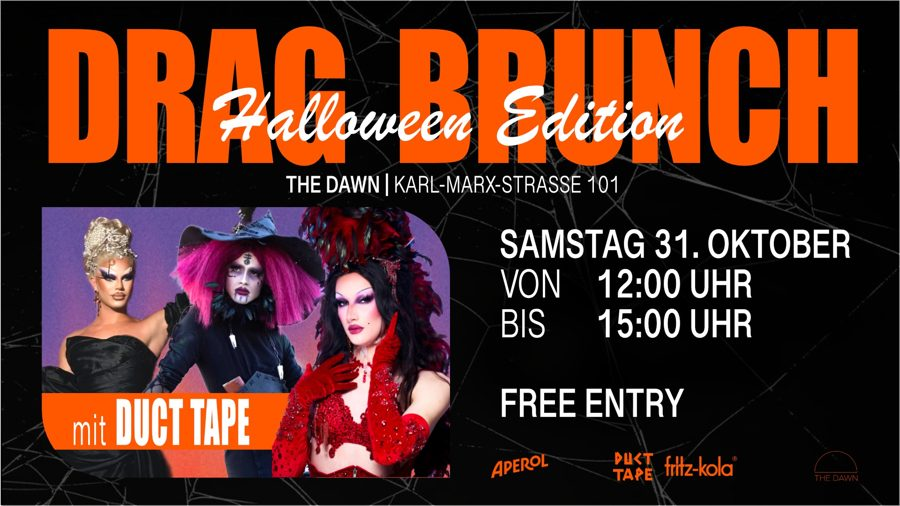

SaturdaySat, 31 October 2026 · 12–3 pm
Halloween EditionFritz-Kola Drag Brunch
The Dawn Neukölln · with DUCT TAPE · Free Entry
HALLOWEEN DRAG BRUNCH 🎃🦇
Duct Tape und Fritz-Kola laden euch zum schaurigsten Drag Brunch des Jahres ein!
Read more
Am Samstag, den 31. Oktober, feiern wir Halloween im The Dawn Neukölln. Freut euch auf einen entspannten Mittag mit mehreren Showblöcken, schaurigen Drinks, gutem Essen und jeder Menge guter Laune.
DIE SHOW 👻 Durch den Brunch führen euch eure DUCT TAPE Mädels: 👑 EMI 👑 Symba 👑 Magda von Pfeffer Freut euch auf mehrere Drag-Performances, spontane Challenges, Gewinnspiele und jede Menge Überraschungen.
KOSTÜMWETTBEWERB 🎃 Kommt verkleidet! Alle, die im Kostüm kommen, bekommen ein Getränk aufs Haus. Und das beste Kostüm des Tages wird von uns gekürt.
DAS ESSEN 🍽️ Das Essen bestellt ihr wie gewohnt à la carte direkt aus der Speisekarte des The Dawn.
HALLOWEEN SPECIALS 🍹 🍊 Exklusive Drink Specials Gemeinsam mit Fritz-Kola und Aperol erwarten euch schaurige Signature Drinks und Halloween Specials.
🧡 Aperol for a Good Cause Wer am Eingang eine kleine Spende für unsere Drag Artists dalässt, erhält als Dankeschön einen Aperol Spritz.
🎡 Spin the Wheel Dreht an unserem Glücksrad und gewinnt tolle Preise, darunter Merch, Gratis-Drinks und viele weitere Überraschungen.
🎭 Mehrere Showblöcke Während des gesamten Brunchs erwarten euch verschiedene Drag-Performances. Perfekt, egal ob ihr zum Frühstück oder auf den letzten Aperol vorbeikommt.
WICHTIGE INFOS 📍 📍 The Dawn Neukölln KALLE, Karl-Marx-Straße 101, 12043 Berlin einfach mit dem Aufzug bis ins Dachgeschoss 📅 Samstag, 31. Oktober 🕛 12:00 bis 15:00 Uhr 💸 Eintritt frei, ihr zahlt lediglich eure Speisen und Getränke. 🪑 Nur mit TischreservierungReserviert euren Tisch ganz einfach über OpenTable. Ohne Reservierung können wir euch leider keinen Platz garantieren.
Mehr Infos & Updates findet ihr wie immer auf Instagram bei @ducttapeberlin und @fritzkola_berWir sehen uns beim HALLOWEEN DRAG BRUNCH. 🎃🖤